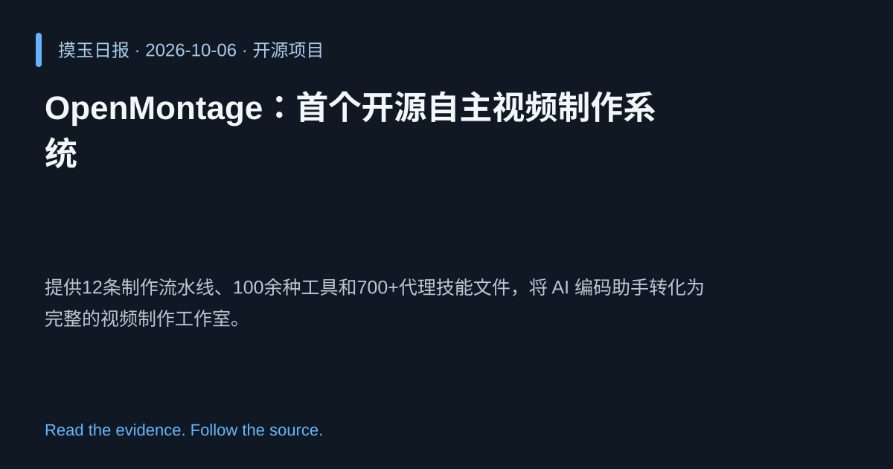

2026-10-06 · Asia/Shanghai · 开源项目 · #1
OpenMontage：首个开源自主视频制作系统
calesthio/OpenMontage
提供12条制作流水线、100余种工具和700+代理技能文件，将 AI 编码助手转化为完整的视频制作工作室。
为什么值得关注
让开发者无需专用软件即可一键生成专业视频，降低制作成本并推动生成式 AI 进军媒体领域。
- 12 条端到端视频生产流水线，实现从脚本到成片的全流程自动化。
- 集成 100+ 工具与 700+ 代理技能文件，支持灵活的任务编排。
- 开放源码，基于 Python，易于社区扩展与二次开发。

热度 59.1 / 100；排名与评分保留该期记录。